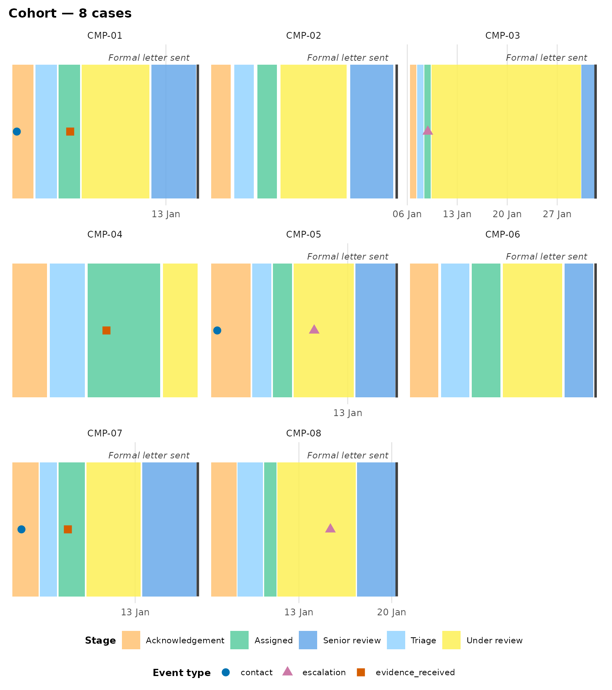
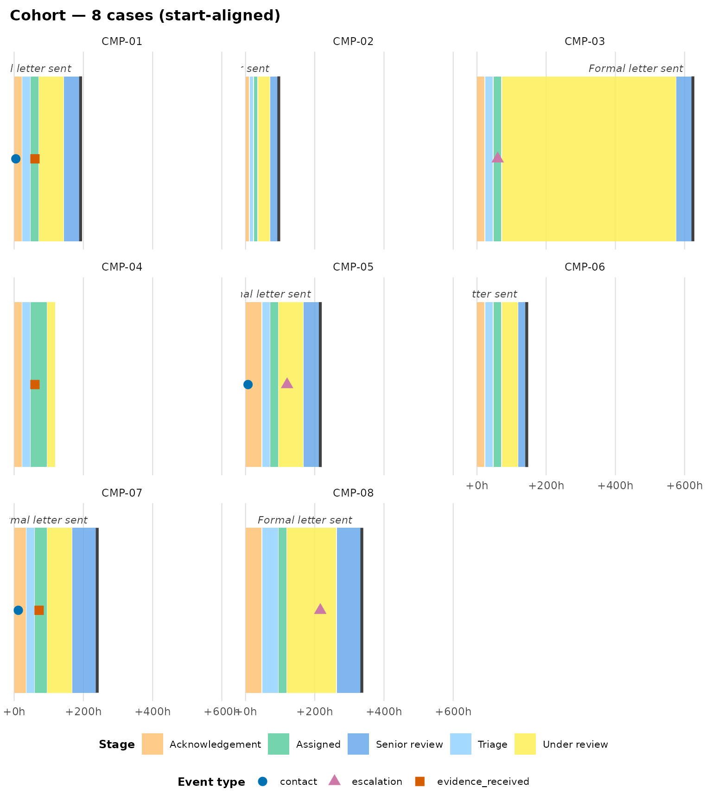
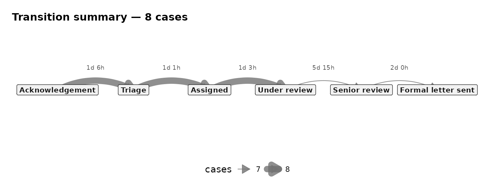

Cohort analysis
cohort-analysis.RmdEverything so far has looked at one case at a time. This vignette
covers comparing many cases at once: a faceted small-multiples view, and
aggregate statistics (per-stage durations, breach rates against a
target, and a transition-flow diagram) across a whole cohort. It uses
complaint_example’s eight complaints throughout.
Faceted comparison: plot_journey_cohort()
plot_journey_cohort() lays several cases out as one
facet panel per case. By default (case_ids = NULL) it plots
every case in the data, up to a max_cases guard (25, since
faceting hundreds of spells is a hang, not a plot — pass explicit
case_ids to raise it):
plot_journey_cohort(
complaint_example,
location_categories = "stage_change", case_col = "complaint_id",
patient_col = NULL, terminal_activities = "Formal letter sent",
state_label = "Stage"
)
Each panel gets its own time axis by default
(align_start = FALSE), so absolute dates line up across
panels — useful for spotting whether several complaints were affected by
the same event (a staffing gap, a system outage). The same location
keeps the same fill colour in every panel: the palette is built once,
over the union of stages across the whole cohort, not independently per
panel.
Aligning start times
To compare durations rather than dates, rebase
every case to elapsed hours from its own first move with
align_start = TRUE. All panels then share one
+Nh axis:
plot_journey_cohort(
complaint_example,
location_categories = "stage_change", case_col = "complaint_id",
patient_col = NULL, terminal_activities = "Formal letter sent",
state_label = "Stage", align_start = TRUE
)
Now it’s immediately visible that "CMP-03"’s bar runs
far longer than the others — the stall in “Under review” this vignette
keeps coming back to.
Aggregate statistics
Faceting is good for eyeballing a handful of cases; for a whole
cohort, eventviz also has numeric summarisers built on the
same box-derivation pipeline, so they describe exactly what the plots
draw.
Per-stage duration statistics
summarise_stage_durations(
complaint_example,
location_categories = "stage_change", case_col = "complaint_id",
patient_col = NULL
)
#> # A tibble: 6 × 7
#> location n_cases mean_secs median_secs p25_secs p75_secs n_inferred_excluded
#> <chr> <int> <dbl> <dbl> <dbl> <dbl> <int>
#> 1 Acknowled… 8 108000 86400 86400 140400 0
#> 2 Assigned 8 97200 86400 86400 97200 0
#> 3 Formal le… 7 NA NA NA NA 7
#> 4 Senior re… 7 172800 172800 129600 216000 0
#> 5 Triage 8 91800 86400 86400 86400 0
#> 6 Under rev… 8 487543. 259200 216000 388800 1Every duration statistic in the package respects
end_inferred: a case’s final stage has no recorded
exit, so its dwell is an imputed rendering convenience, not data. By
default it’s excluded from the mean/median/ quantiles
(n_inferred_excluded reports how many were dropped); pass
include_inferred = TRUE to fold them back in.
Breach rate against a target
summarise_breach_rate() reports what fraction of cases
exceed a target, either across the whole spell
(scope = "spell") or within one named stage
(scope = "<stage name>", e.g. an SLA on how long a
complaint may sit in “Under review”):
breach <- summarise_breach_rate(
complaint_example, target_hours = 24 * 7, scope = "Under review",
location_categories = "stage_change", case_col = "complaint_id",
patient_col = NULL
)
breach
#> # A tibble: 7 × 4
#> case_id elapsed_hours breached end_inferred
#> <chr> <dbl> <lgl> <lgl>
#> 1 CMP-01 72 FALSE FALSE
#> 2 CMP-02 36 FALSE FALSE
#> 3 CMP-03 504 TRUE FALSE
#> 4 CMP-05 72 FALSE FALSE
#> 5 CMP-06 48 FALSE FALSE
#> 6 CMP-07 72 FALSE FALSE
#> 7 CMP-08 144 FALSE FALSE
attr(breach, "breach_rate")
#> [1] 0.1428571Transition flow
summarise_transitions() reduces the cohort to directed
stage-to-stage transitions with counts and mean/median dwell in the
origin stage; plot_transition_summary() draws them as a
flow diagram, with edge width encoding frequency and forward/backward
transitions bowed opposite ways so re-entries stay legible:
plot_transition_summary(
complaint_example,
location_categories = "stage_change", case_col = "complaint_id",
patient_col = NULL
)
Every complaint here follows the same six stages in the same order, so the diagram is a straight line — the re-entry handling matters more for cohorts where cases can loop back or skip stages (a ticket reopened after “Resolved”, say).
Next steps
-
vignette("linear-processes")for the single-case staircase view these aggregates complement. -
?plot_patient_journeyforreturn_data = TRUE’s single-casesummaryelement, built on the samesummarise_journey_durations()this vignette uses across a cohort.